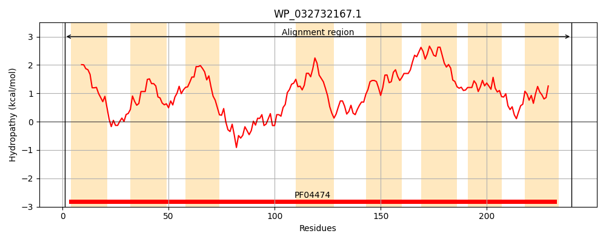
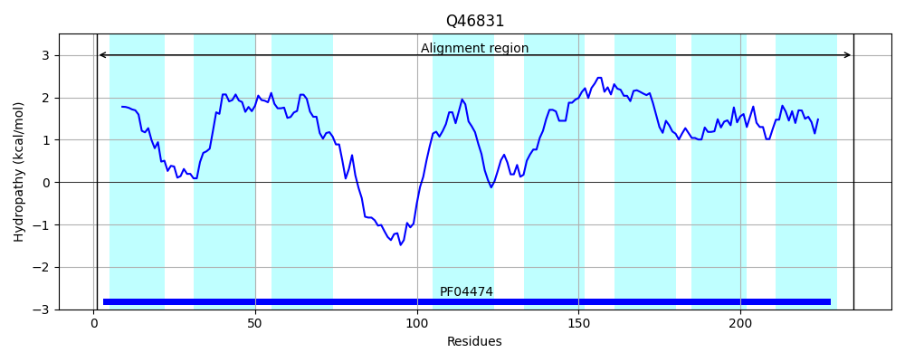
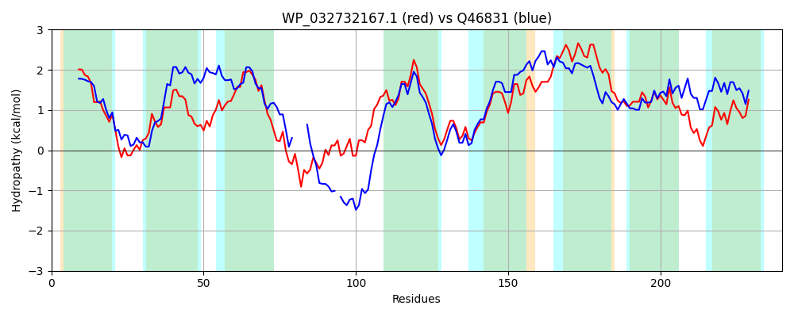

Hit Accession: Q46831
Hit TCID: 9.B.120.1.1
Hit Description: gnl|BL_ORD_ID|13687 gnl|TC-DB|Q46831|9.B.120.1.1 Uncharacterized protein yqgA OS=Escherichia coli (strain K12) GN=yqgA PE=4 SV=1
Mach Len: 240
e:0.000000
Query TMS Count : 8
Hit TMS Count: 8
TMS-Overlap Score: 5.800000
Predicted Substrates:None
BLAST Alignment:
Score: 552 , Bit scores: 217 bits, E-value: 3.3e-71, Alignment length: 240, Percentage identity: 47
Query: 1 MAIGIFVCSGSLLVGALAGASLNRFIPEHFKKTLPLIAGLISISMGIHFVNKLHNLPPIALAIIVGTIIGGLLNIEKWIERAGTTLRTPIERIFPAQASASVSAEDFMNQFIAVLILFCASGTGIFGALTEGMTGDPTILLTKSILDFFTAAIFASTLGYIITTIFIPQLIIFVILFFAATFIMTLINPSMIADFTACGGIIMLATGFRLCGIRHFPTANMLPSLLLVMPFSAAWQQFVA 240
M IG F+ + ++L+G + GA L++ +PE + ++ I GL S+ +GI V K NLP + LA ++G +IG + +EK + T + +F + + E F+ ++A+++LFCASGTGIFGA+ EGMTGDP+IL+ KS LDFFTA IFA +LG ++ I IP LII + L +AA I+ L PSM+ADF+A GG+++LATG R+CGI+ FP NMLP+LLL MP SAAW + A
Sbjct: 1 MVIGPFINASAVLLGGVLGALLSQRLPERIRVSMTSIFGLASLGIGILLVVKCANLPAMVLATLLGALIGEICLLEKGVN----TAVAKAQNLF-RHSRKKPAHESFIQNYVAIIVLFCASGTGIFGAMNEGMTGDPSILIAKSFLDFFTAMIFACSLGIAVSVISIPLLIIQLTLAWAAALILPLTTPSMMADFSAVGGLLLLATGLRICGIKMFPVVNMLPALLLAMPLSAAWTAWFA 235 | Protein Hydropathy Plots: |
|---|
|  |  |
Pairwise Alignment-Hydropathy Plot:
|
|---|
|  |